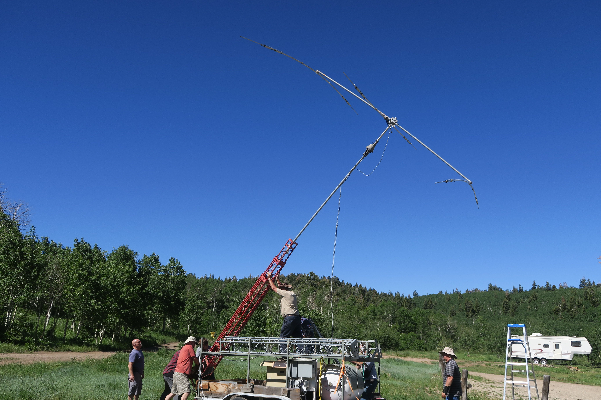
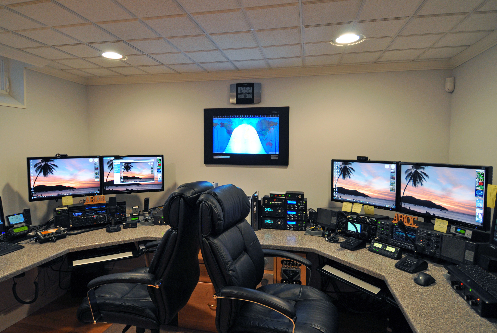

Welcome to the Utah Amateur Radio Club's web site. Our club is the oldest and largest amateur radio club in the state of Utah. It holds the call W7SP, a memorial call for Leonard (Zim) Zimmerman, early UARC member and radio pioneer. It also publishes a monthly newsletter called The Microvolt, electronic versions of which can be found here. To use this site, please select from the links in the index on the left. You will find the most common destinations available there. Some links direct you to another menu for certain items. The Microvolt link is an example. This site includes information about the club's history and current activities, as well as answers to the most frequently asked questions about Amateur Radio in Utah and Amateur Radio in general. We hope you find it useful. Suggestions are always appreciated. Have a question not answered here? Call UARC's Ham Hotline, 583-3002. A volunteer will either be available in person or, generally, will get back to you within 24 hours.
UARC is an ARRL-affiliated club and recommends ARRL membership highly. Membership includes QST magazine, the premier amateur radio publication in the US. In addition, ARRL is the only organization that regularly represents the interests of the amateur radio hobby in proceedings before the FCC and other bodies, such as Congress, that allocate frequencies and make the hobby possible. ARRL also sponsors many of the best-known operating awards such as Worked All States (WAS) and DX Century Club (DXCC). It sponsors the most popular contests including Field Day and Sweepstakes. It provides technical assistance and, in some cases, legal assistance. We owe many features of our hobby and even its very existence to ARRL.
Here are some of the items supported by UARC dues: